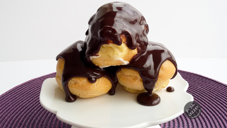

Choux pastry dough is piped through a pastry bag or dropped with a pair of spoons into small balls and baked to form largely hollow puffs .After cooling, the baked profiteroles are injected with filling using a pastry bag and narrow piping tip,or by slicing off the top, filling them, and reassembling. For sweet profiteroles, additional glazes or decorations may then be added.

Baking a chocolate babka is no casual undertaking. The Eastern European yeast-risen coffee cake has 14 steps and takes all day to make. But the results are worth every sugarcoated second – with a moist, deeply flavored brioche-like cake wrapped around a dark fudge filling, then topped with cocoa streusel crumbs.

According to legend, the brownie was invented by one Brownie Schrumph when she tried to make a chocolate cake without baking powder or baking soda. Instead of rising, the brownie collapses into a dense texture. Brownies evolved to use less and less liquid until most recipes only call for eggs and melted butter and no additional liquid. They also have less and less flour to get that more dense texture instead of the more cake-like texture of the original brownie. Brown sugar also gives them that shiny top crust.